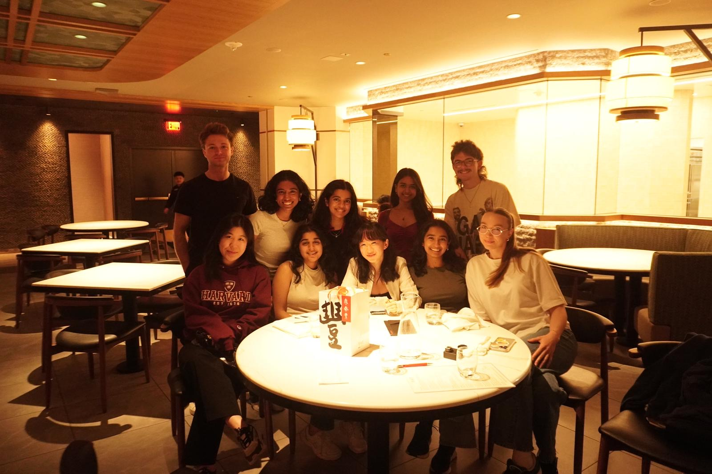
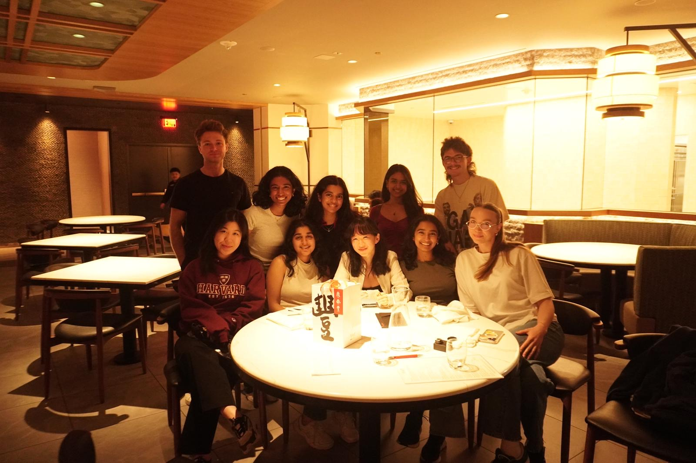
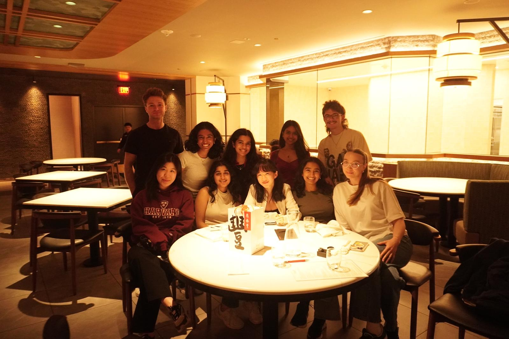
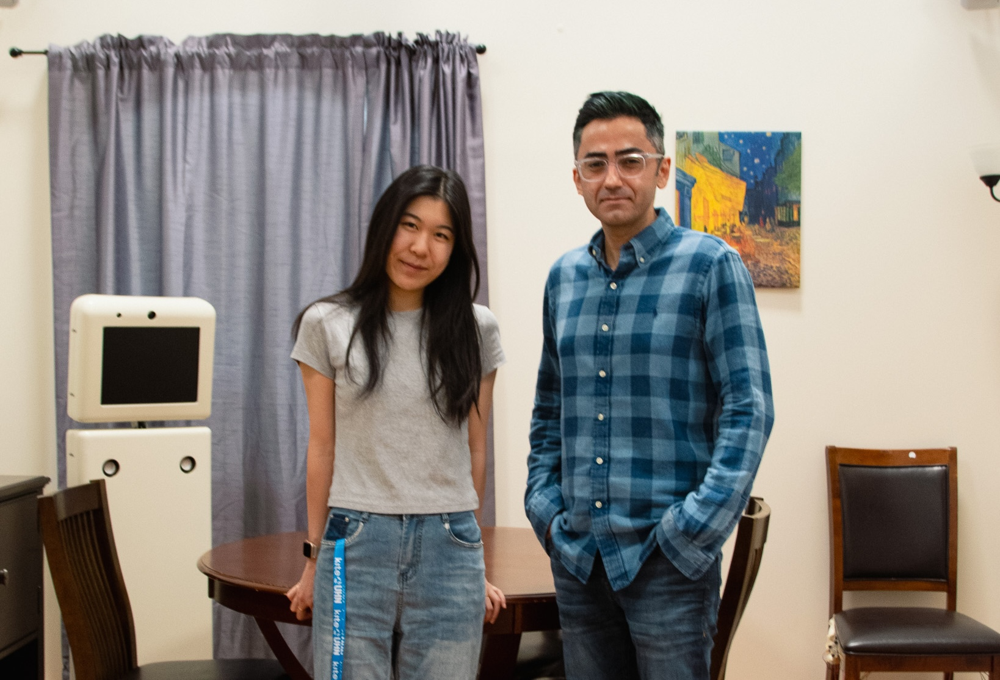
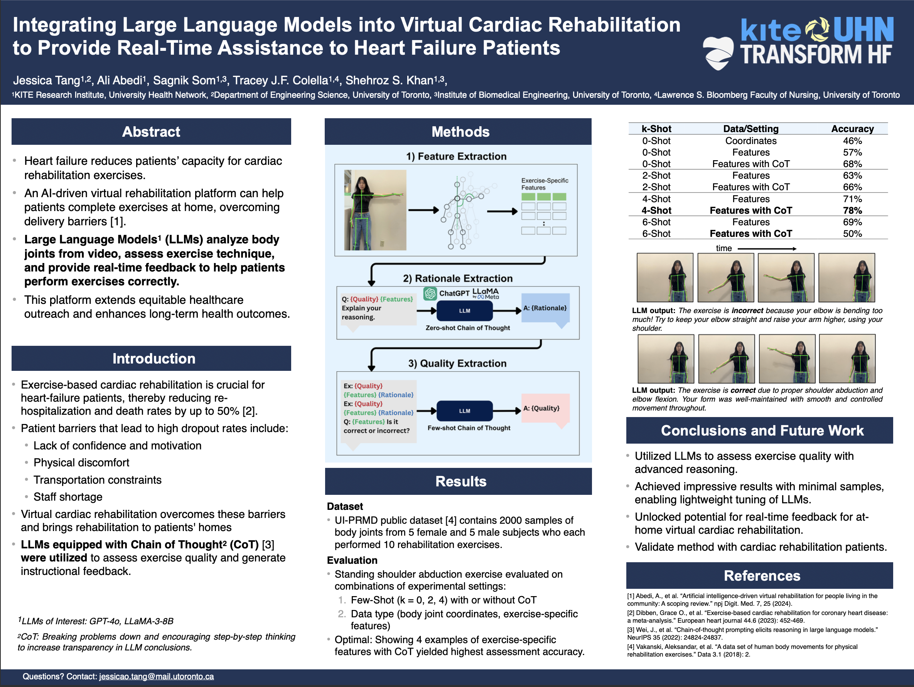
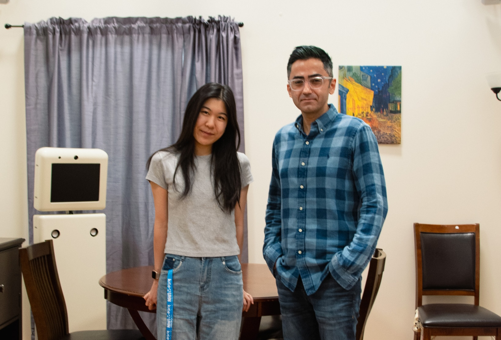
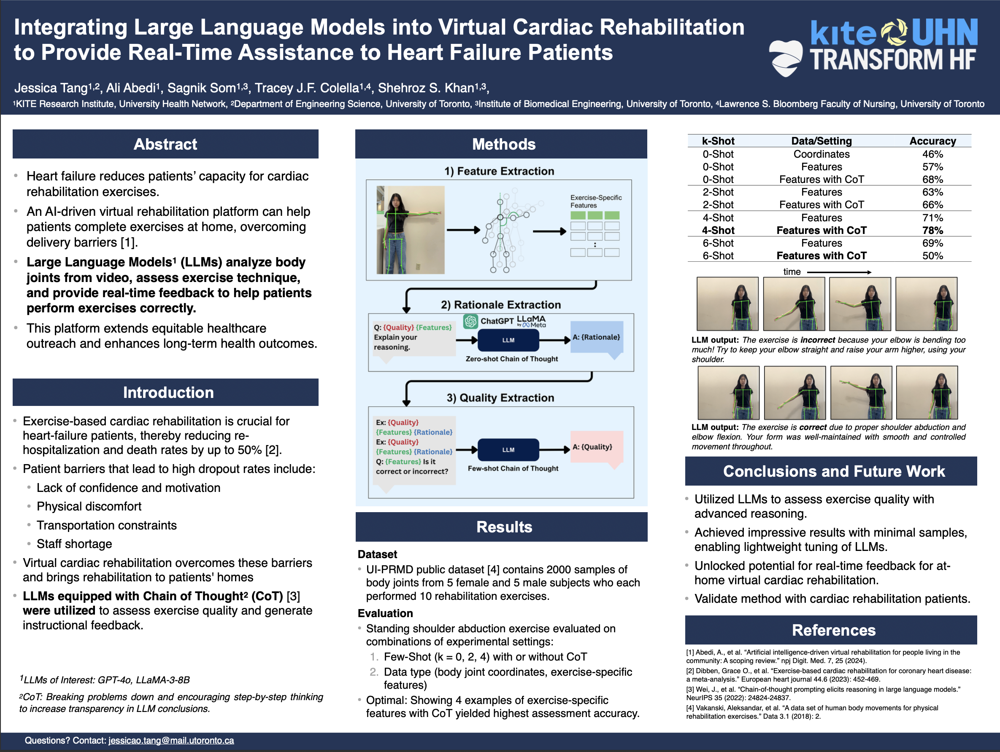

Microsoft Research
Influence Attribution in LLMs
Tracing in agentic LLM systems to pinpoint influence and responsibility.
profile
AI Alignment, Interpretability, Ethics.
▹ I'm deeply interested in researching and developing interpretable and aligned AI systems to help society.
▹ I'm studying Machine Intelligence in Engineering Science at the University of Toronto, working with Sheila McIlraith and Silviu Pitis at Vector Institute.
▹ Previously I interned at Microsoft Research leading a project on multi-agent interpretability and influence tracing, with Sharad Agarwal and Shraddha Barke.
▹ I founded illuminAI, a boundless community to creatively blend computer science and arts, increasing public engagement of AI ethics and societal impacts. We host ethics hackathons, make videos and publish articles.
▹ Outside of research, I sing, perform, and write songs!
Select projects spanning interpretability, human-AI collaboration, and embodied intelligence. Click to expand notes.
Multi-layered attribution work probing how collaborative language agents negotiate goals, resist jailbreaks, and surface conflict signals in real time.
Experiments moving advanced modelling into embodied domains—from rehabilitation labs to wildfire monitoring and precision farming.
Writing and analysis that interrogate agency, responsibility, and the social framing of emerging technologies.
Hands-on engineering studies spanning audio intelligence and modular aerospace platforms.
A rotating glimpse into current labs, collectives, and stages.

Microsoft Research
Tracing in agentic LLM systems to pinpoint influence and responsibility.

illuminAI 2025
Hosted 180 students across Ontario to develop ethical AI systems Website.
RBC scholarship
One of top 5 undergrad students selected Read More .
 



KITE Research Institute
Personalized Feedback using LLMs with pose features for virtual exercises rehabilitation.

Toronto Robotics and AI Lab, aUToronto
Developing algorithms for real-time lane detection and tracking.


music & performance
Piano, violin, singing, production, composition!
Partners, studios, and publications shaping the work.
Microsoft Research · Vector Institute
illuminAI · Wave Learning Festival
Globe & Mail · Springer Nature
Royal Conservatory of Music